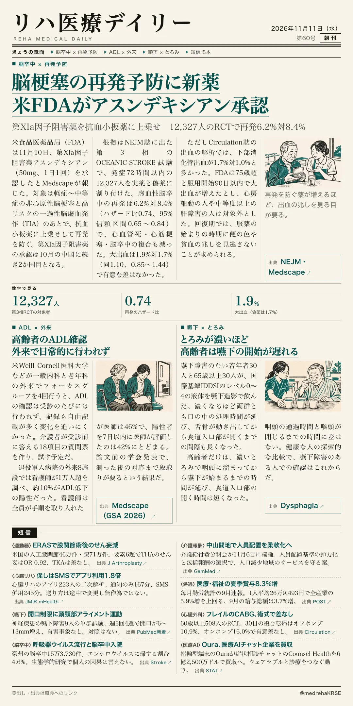
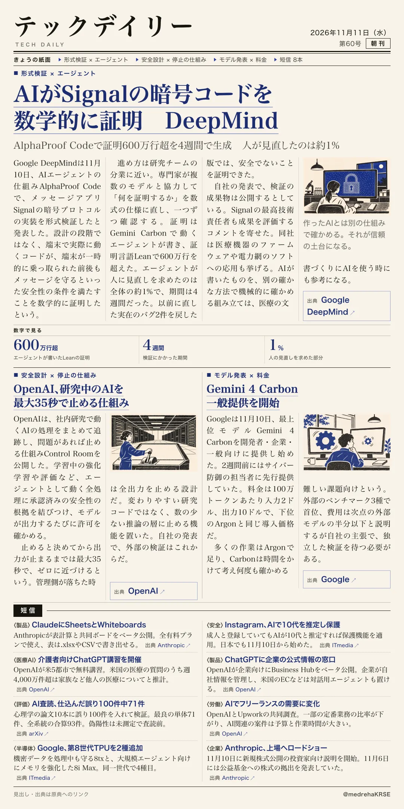

リハ医療デイリー
脳梗塞の再発予防に新薬 米FDAがアスンデキシアン承認
第XIa因子阻害薬を抗血小板薬に上乗せ 12,327人のRCTで再発6.2%対8.4%
非心原性脳梗塞と高リスクTIAが対象。

テックデイリー
AIがSignalの暗号コードを数学的に証明 DeepMind
AlphaProof Codeで証明600万行超を4週間で生成 人が見直したのは約1%
実際に端末で動くコードまで検証したと発表。

第XIa因子阻害薬を抗血小板薬に上乗せ 12,327人のRCTで再発6.2%対8.4%
非心原性脳梗塞と高リスクTIAが対象。

AlphaProof Codeで証明600万行超を4週間で生成 人が見直したのは約1%
実際に端末で動くコードまで検証したと発表。
